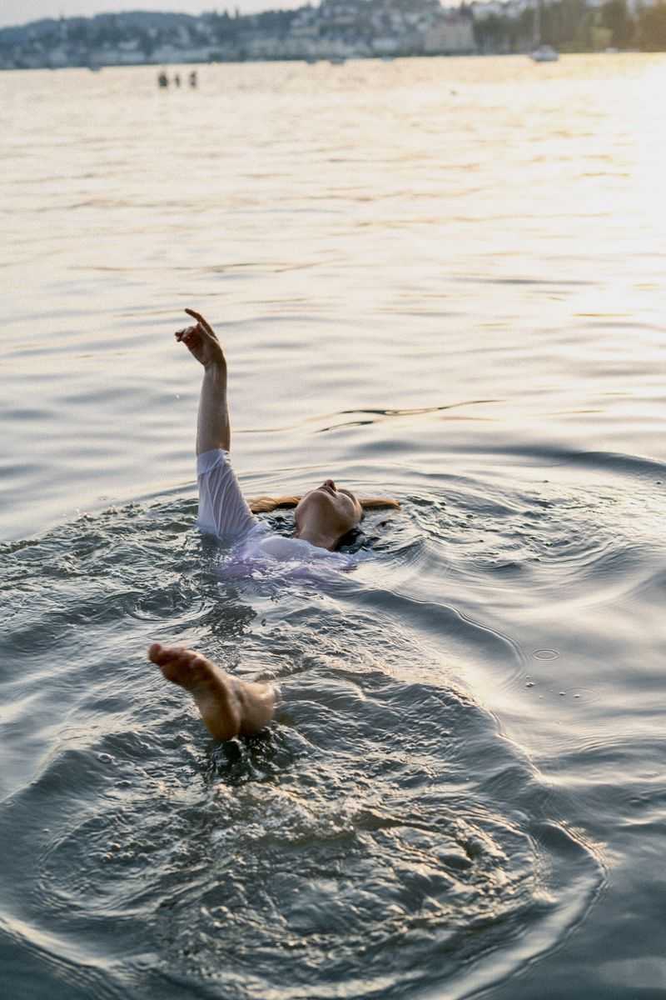
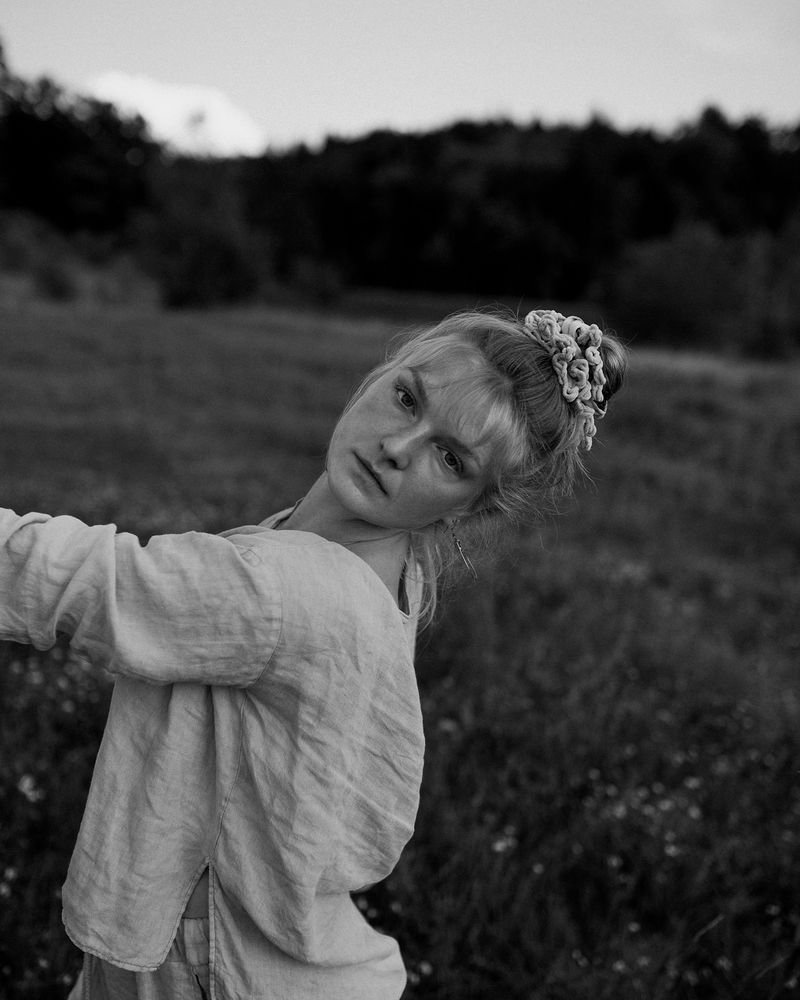
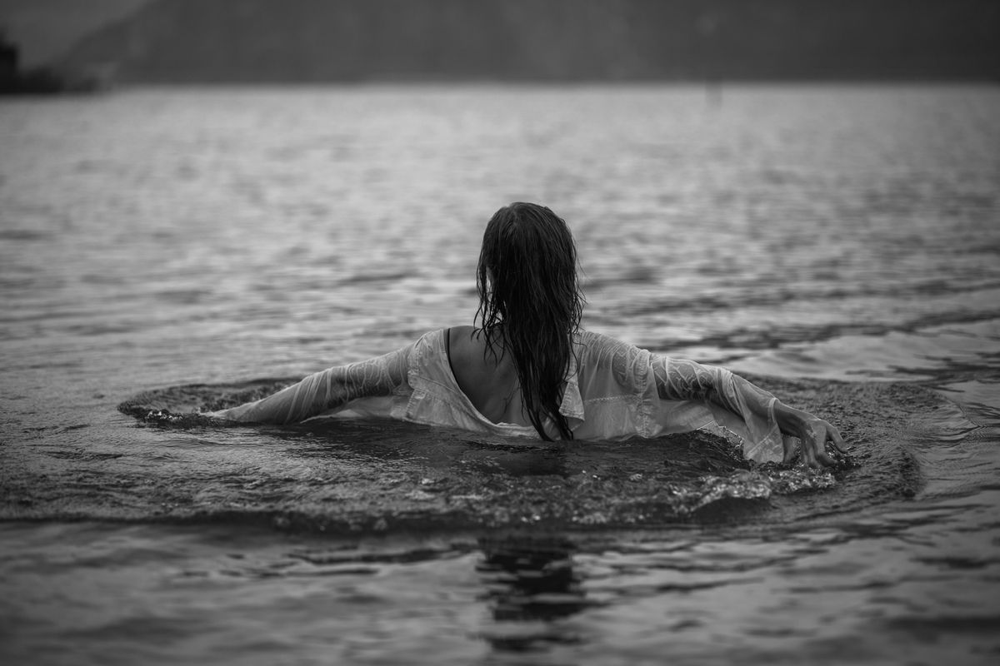

The Fluid Self · 1:1 Mentoring
A devotion to your inner river
And to the power that moves you. Three months 1:1 with Lucy, online or in the studio in Kriens.


Personally, from me
My favorite place to dance is the ocean
As I let myself breathe and inhale the wind, the salt, the soft water molecules of the sea, I become one with the endless ocean inside me. Tapping into the fluidity of my body. Into one of the greatest forms of meditation there is.
Feeling the strength in the softness. The love and strength from my center. Realizing that the more I relax, the more it moves me. A constant fluidity.
I invite you to dance with me and enter the ocean inside you. Letting go of all that was and becoming one with the eternal present, from where you are always creating. A space to explore your depth, your lightness, and to play with these two polarities.
Lucy
The journey
Ever wondered what's underneath the surface?
Underneath your longing for expression and your individual way of movement? Ever wondered how it feels to embrace the fluidity in your body and in your rhythm of life?
I invite you to go on a journey within. Exploring layers that you meet each day but were never truly able to touch. A space of slowing down, to listen to your body, your breath and what wants to move through you.
Expression takes courage and patience. That's why we work with soft, intuitive methods, tailored specifically to you and your body. The pressure to perform is invited to leave. Your dance becomes softer, rounder, more authentic. And slowly, a deep trust in your inner flow and the mystique that lives within you begins to unfold.
You will grow braver in being seen, in your dance and in your life.
- Unfold your inner flow
- Feel empowered in your authentic body
- Surrender to the softness of freedom, beyond achievement

Waves, spirals and circles
A field to explore your ever-unfolding flow, and to always come back to your calm safety, which is ever-present.
- How does water move during a storm?
- In a silent lake between mountains?
- When a stone drops into it?
- When it heads towards the coastline?
90 minutes
What a session looks like
- ArrivingWe talk a little, or go straight into movement.
- On the floorA small journey through the body, guided by my voice.
- Fluid toolsWe deepen what your body is learning.
- Your themeContact improvisation, or a theme we explore in the body. Choreography if you wish.
- NourishmentA gentle, meditative landing in the here and now, often with my hands.
Working together
The Fluid Self
A space for those who are new to fluid movement, as well as for dancers who want to decondition and tap more deeply into their true potential of feeling and movement.
From first call to yes
- MeetWrite me a short message and we find a time for a free video call. We look at what your body longs for and whether it fits.
- You decideIn your own time. If it's a yes, we set the six dates.
- Three monthsSix sessions, and your own practice in between.
Maybe you're here because…
your head says “I can handle anything”, and your body says something else. You've been working, working, working, and you miss asking yourself: what do I actually feel?
You don't need to arrive ready. We start where you are.
Questions
Good to know
Do I need dance experience?
No, it's open level. If you do dance, you're just as welcome. The work is experimental and opens places you may never have felt before.
What about touch?
We approach it very slowly, never forced, following what your body longs for. You say what feels right and where you don't want to be touched. Mostly it's very gentle, up to giving me your whole weight, if and when you want to. Nothing is expected of you in the first session.
Online or in person?
Both. In the studio in Kriens (plus CHF 60 studio rent per session) or online. Online we work with movement, breath and my voice; touch happens in the studio.
What happens in the intro call?
A free video call. Just write me a short message and we find a time. We talk about your wishes, what your body longs for and which themes are alive. And we feel whether there's resonance, and in what frame.
Can I pay in instalments?
Yes, in 3 instalments.
German or English?
I speak both. We'll find your language in the intro call.
Voices
Kind words
“Be like water, which is fluid & soft & yielding. In time, water will overcome rock, which is rigid & hard. What is soft is strong.”
If something in this moves you, let's simply talk.
Ask for a free intro call